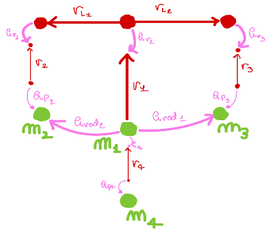

Optional: optimisation
In this section a variable mass m4 is connected to G1 with a starting distance of Ls0 and with a damper with variable damping.
The kinematic of the new mechanical system is modelled and then different values for the mass and damper are used and evaluated in order to minimise the settling time of the system.
Linear Graph

Kinematic with mass m4 and damper added
Lagrangian Equations
Tune the mass and damping coefficient to minimise the settling time of the system
Simulation with m4 = 10 and Cs4 = 10
Simulation with m4 = 10 and Cs4 = 100
Simulation with m4 = 100 and Cs4 = 100
Simulation with m4 = 1 and Cs4 = 1
Result comparison